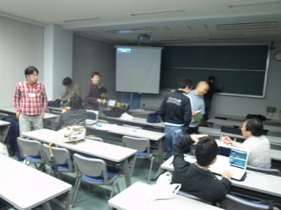
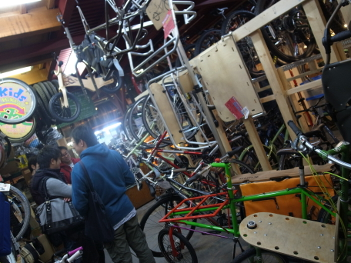
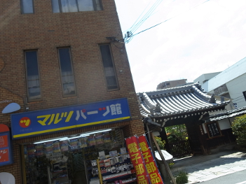
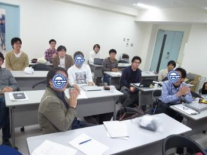

Metasepi作戦会議 第2回 議事録
Posted on April 22, 2013 / Tags: meeting
Table of contents
Metasepi作戦会議 第2回を 名古屋にある大学 と京都にある大学で開催したでゲソ。
今回の作戦会議はMetassepiプロジェクト全体ではなく Ajhcコンパイラ に焦点をしぼって、AjhcコンパイラとMetasepiプロジェクトの宣伝に行脚したんでゲソ。 Cortex-M3マイコンでのアプリケーション事例があるので、Ajhcのユーザーや開発者を増やせるのではないか？と思ったのでゲソ。 Haskellコンパイラとしては jhc よりも GHC の方が圧倒的にメジャーなので、皆マイコンのようなメモリ資源がとぼしい環境では動かせないものと思っているんじゃなイカ？ そんな中Ajhcを使ってRAMを40kBしか使わずに簡単なアプリケーションを作れることを知るとやはりビックリするようでゲソ。 Metasepiプロジェクトの良いアピールになったでゲソ!
今回は名古屋と京都でAjhcの宣伝をしたでゲソが、他の場所にも是非営業にいってみたいゲソ。 ワシから直にAjhcコンパイラのプレゼンを聴いてみたい方はお気軽に @metasepi まで連絡が欲しいでゲソ!
発表資料
Ajhcコンパイラの解説 - @masterq_teokure
会議の雰囲気@名古屋
  
会議の雰囲気@京都
 
blog comments powered by